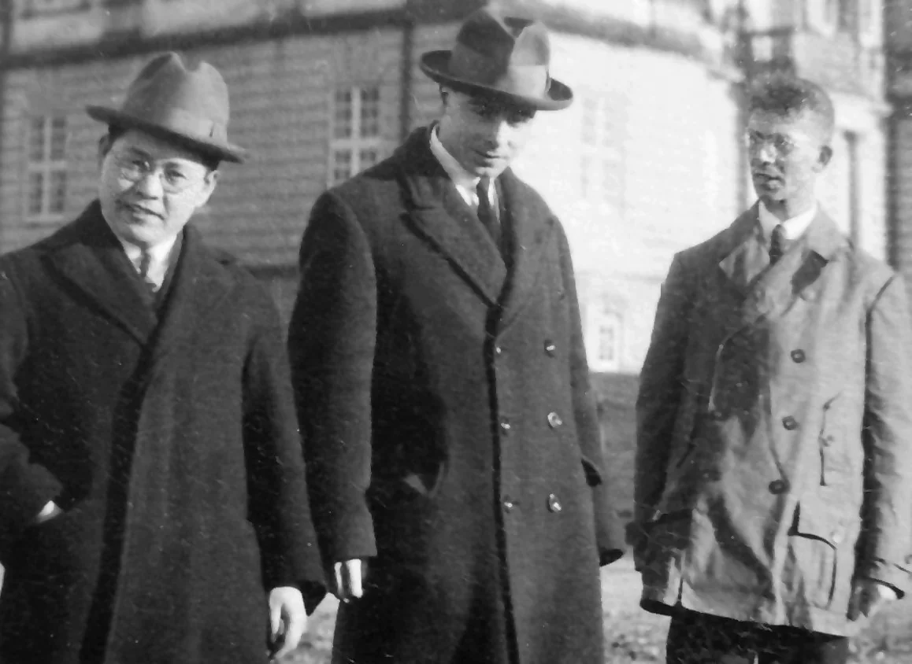
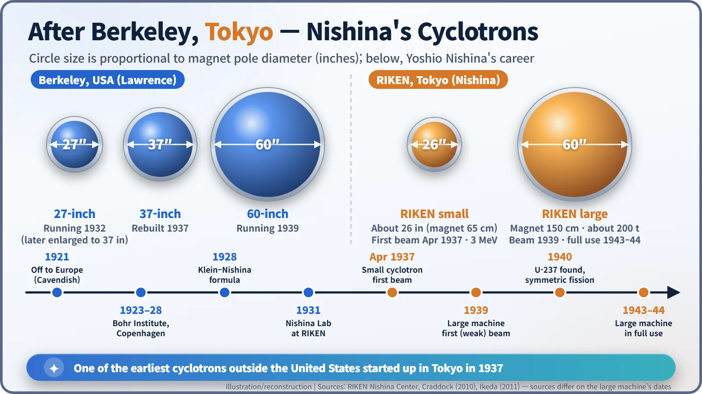
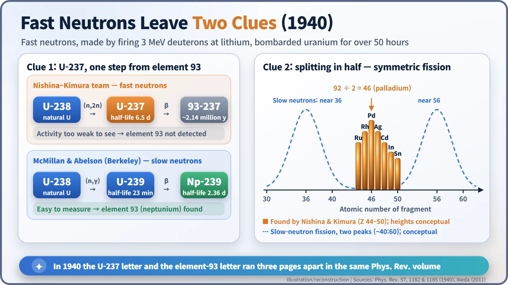

Nuclear History · 070
Three Pages from Element 93 — Yoshio Nishina and Tokyo's Cyclotrons
A small Tokyo cyclotron fired its first beam in 1937, and three years later Nishina and Kimura came within one step of element 93.
In April 1937 a small cyclotron in Tokyo fired its first beam, one of the earliest such machines outside the United States. Built by Yoshio Nishina's laboratory at RIKEN, it let Nishina and the chemist Kenjiro Kimura discover uranium-237 and the symmetric splitting of uranium by fast neutrons in 1940, and come within a step of element 93.
Three pages from element 93
Open volume 57 of the American journal Physical Review, from June 1940, and you will find a small coincidence. On page 1182 sits a short letter sent from Tokyo: bombarding uranium with fast neutrons had produced a new uranium isotope with a half-life of 6.5 days. Just three pages later, on page 1185, comes "Radioactive Element 93" by Edwin McMillan and Philip Abelson of Berkeley, announcing the first human-made element beyond uranium, later named neptunium. The Tokyo team had walked right up to the door of element 93 and turned back. The man behind that letter was Yoshio Nishina (1890–1951), often called the father of modern physics in Japan. [1] [2]
An electrical engineer in Bohr's Copenhagen
Nishina graduated at the top of his class in electrical engineering from Tokyo Imperial University in 1918 and joined the Institute of Physical and Chemical Research, known as RIKEN, in 1920. The next year he left for Europe. He worked under Ernest Rutherford at the Cavendish Laboratory in Cambridge, spent time in Göttingen, and from 1923 to 1928 stayed at Niels Bohr's institute in Copenhagen, right where quantum mechanics was being born. [6]
In 1928, together with the Swedish physicist Oskar Klein, he worked out how often X-rays and gamma rays bounce off electrons, using Dirac's new relativistic quantum theory. The result, the Klein–Nishina formula, is still in radiation physics textbooks today.

Second only to Berkeley
Back in Japan, Nishina opened his own laboratory at RIKEN in 1931 and grew groups in quantum theory, cosmic rays, nuclear physics and radiation biology side by side. Nuclear experiments needed a "gun" to fire fast particles at nuclei, and Nishina looked to the device Ernest Lawrence had just invented in Berkeley: the cyclotron. Inside a large electromagnet, charged particles circle in a spiral and get a small electric push twice on every lap, a bit like a parent pushing a child on a playground roundabout once per turn until it spins fast.
Construction began in 1935. The team adapted an electromagnet of about 23 tonnes originally made for a radio transmitter, and Nishina sent his assistants Tameichi Yasaki and Ryokichi Sagane to Berkeley to learn the craft. In April 1937 the small cyclotron, with a magnet pole about 65 cm (roughly 26 inches) across, delivered its first beam of 3 MeV deuterons (heavy-hydrogen nuclei). RIKEN describes it as the first cyclotron outside the United States; another machine also started up elsewhere that year, so rankings differ slightly between sources, but it was clearly among the very earliest. [4] [5]
A larger machine followed. When Lawrence ordered the magnet for Berkeley's 60-inch cyclotron, he ordered a second one for Nishina. That magnet, about 200 tonnes with poles 150 cm across, was installed at RIKEN in 1938. Sources disagree on when the big machine "started". The most accurate summary is that it produced a first, very weak beam of 9 MeV protons in 1939, and only after redesign and wartime shortages did it reach full experimental use in 1943–44. [4] [5]

Two clues from fast neutrons
Nishina teamed up with the chemist Kenjiro Kimura (1896–1988), an old friend who had worked alongside him in Copenhagen. Firing the cyclotron's 3 MeV deuterons at lithium produces very fast neutrons. The team exposed a few grams of uranium oxide to these neutrons for more than 50 hours, chemically separated the uranium, and measured its radioactivity. [3]
The first clue was a new isotope with a half-life of 6.5 days. In their words, "This activity is probably due to U 237 produced from U 238 through loss of a neutron." Picture a fast cue ball knocking one ball out of a tight cluster: a fast neutron strikes uranium-238 and knocks out an extra neutron, leaving uranium-237. Uranium-237 beta-decays into element 93, so the team went looking for that element too. They assumed it would behave like rhenium and used rhenium to collect it, but found no activity at all. With hindsight there were two reasons. Element 93 behaves more like uranium than like rhenium, and the isotope they were making, neptunium-237, has a half-life of about 2.14 million years, so its activity was far too weak to see. At Berkeley, McMillan and Abelson used slow neutrons and made neptunium-239, whose 2.36-day half-life was easy to measure. In the end, the half-life decided the race more than skill did. [1] [3] [7]
The second clue was in the fission fragments. The team identified radioactive isotopes of ruthenium (atomic number 44) through tin (50). Half of uranium's atomic number, 92, is 46: palladium. In other words, the nuclei were splitting almost exactly in half. Fission caused by slow neutrons usually gives two unequal pieces, roughly 40 to 60, but with high-energy neutrons this even split, symmetric fission, showed up clearly. That same year Glenn Seaborg and Emilio Segrè at Berkeley obtained similar results, and Seaborg reportedly said in a later lecture in Tokyo that the Japanese group had got there first. [3]

A world-class laboratory in East Asia
Nishina's laboratory also grew people. Sin-Itiro Tomonaga trained there, and Hideki Yukawa was in close contact with it. In 1937 Bohr himself visited Japan, a trip Nishina had worked to bring about. Tokyo's cyclotrons are a reminder that nuclear physics in the 1930s was not only a European and American story. [6]
After 1941, though, the laboratory faced the demands of war, and in November 1945 its two cyclotrons met a very different fate. That is a story for another day.